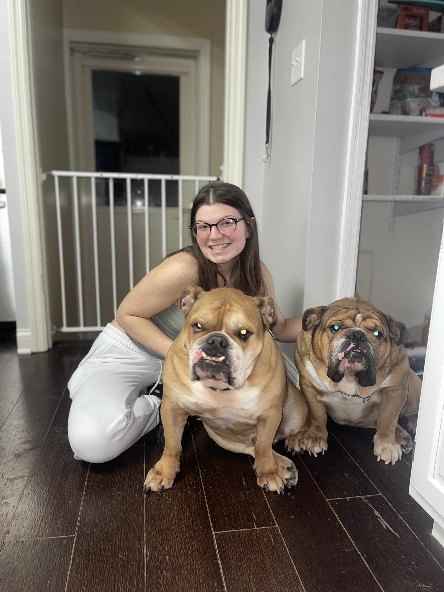
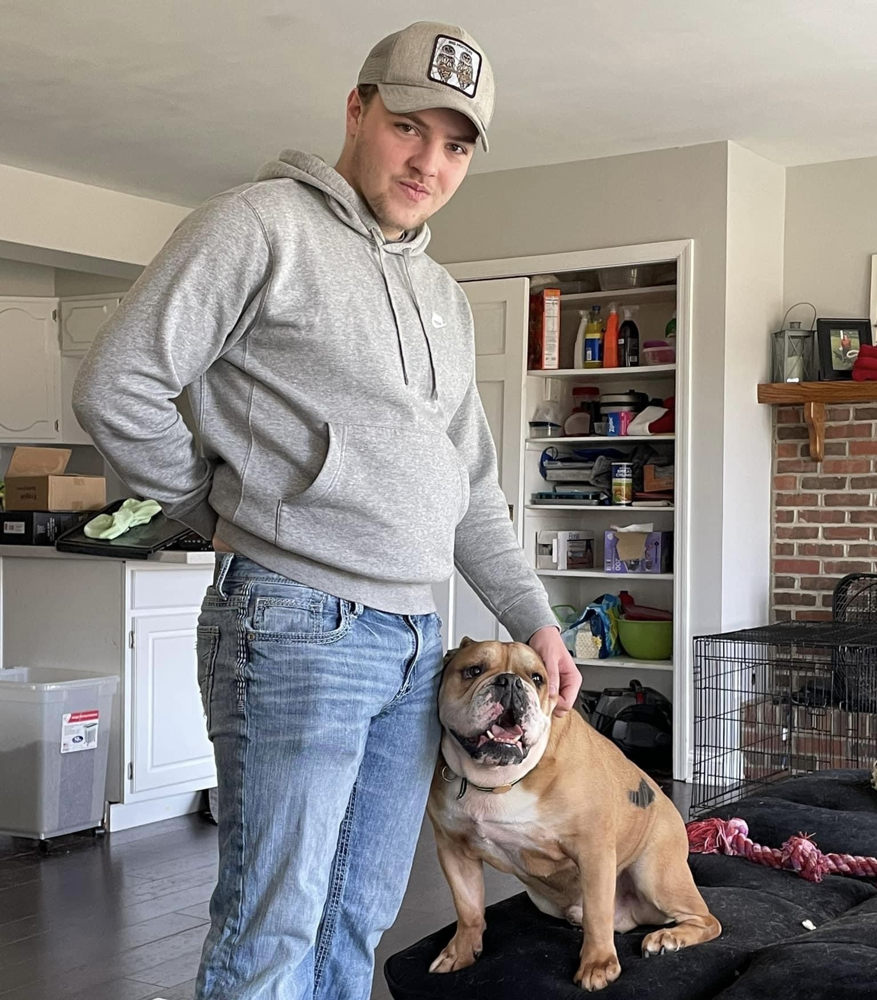
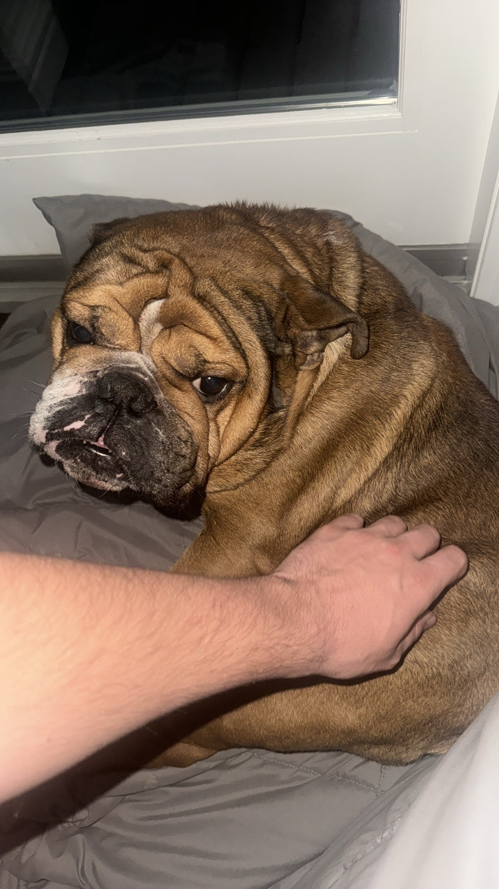

Welcome to My Journey!
On this page you can find out more about me! Make sure to check out the other links!
About Me
I am from a small town in northeast Ohio called Upper Sandusky. I lived there for about eighteen years until I moved to Lexington I have two bulldogs back home named Diesel and Tank. I currently travel the country doing low voltage contruction work, all while being a student at UK and a member of the Kentucky National Guard.
  The Dogs!
From left to right, the first picture is of both dogs with Hannah when she first came to visit Upper Sandusky. As you can see, they took a great liking to her, but were not very fond of each other in the photo.
In the second picture is me and my boy Diesel. He is a big lovebug but definetly has a mind of his own. He is a bulldog mix and is about 4 years old. He loves to play and is very energetic, but picks and chooses who he plays with and attacks! Just kidding! He is a big softy and loves to cuddle.
The last picture was taken from my younger brother's phone. It is of my other dog, Tank. He is a purebred bulldog and is about 2 years old. He is a big baby and loves to cuddle, but he also has a mind of his own. He is very stubborn and will not listen to anyone but me. He loves to play and is very energetic, but he also loves to sleep and cuddle.
| What could it be!? | |
|---|---|
| Activities | Rating |
| Video Games | 10 |
| Stubbing Your Toe | -3 |
| Being Late to Class | 4 |
| Forgetting Homework | -1000 |
| Ice Water at 3 AM | 10000 |